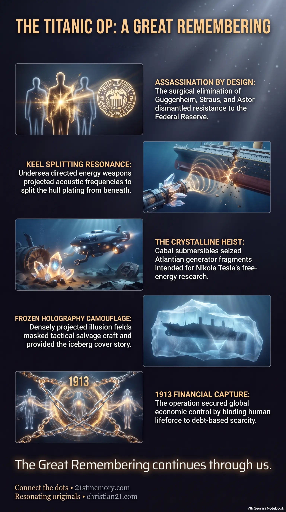

Titanic Heist for Atlantian Power Nodes
Titanic Heist for Atlantian Power Nodes — How the sinking intercepted Atlantian generator fragments, sacred scrolls, and Tartarian tools before they reached Tesla.
The 1912 Titanic sinking as a coordinated sabotage, Federal Reserve assassination, Atlantian crystal heist, and mass death ritual on water.
Test your understanding of Titanic Op — the 1912 sabotage, Federal Reserve assassinations, Atlantian crystal heist, and mass death ritual on water.

Titanic Heist for Atlantian Power Nodes — How the sinking intercepted Atlantian generator fragments, sacred scrolls, and Tartarian tools before they reached Tesla.

The 1912 Titanic Op — Directed-energy keel splitting, frozen-holography icebergs, and the targeted assassination of Federal Reserve opponents.
The Titanic Op was a highly coordinated, multi-layered sabotage operation and mass deception executed in the North Atlantic in 1912. On its surface, the event was recorded as the tragic sinking of a luxury passenger liner due to an accidental collision with an iceberg. In reality, the operation was a calculated power grab, a targeted political assassination, a high-stakes heist of ancient crystalline technologies and sacred records, and a massive mass death ritual conducted on water. This watershed event initiated a rapid descent into the modern 3D parasitic overlay, neutralizing powerful opposition to the Federal Reserve banking system and securing key artifacts of old-world science before they could be used to unlock planetary free energy.
The destruction of the Titanic was the first major mass deception of the modern epoch, serving as a template for how the Council of Parasitic Races would utilize staged natural or accidental catastrophes to eliminate human agency and alter the timeline. The primary political objective of the operation was the surgical elimination of three prominent figures of immense wealth and influence: Benjamin Guggenheim, Isidor Straus, and John Jacob Astor. These individuals stood as the final significant barrier against the establishment of the central banking system known as the Federal Reserve. Their targeted deaths dismantled the organized resistance to this financial capture, allowing the cabal to secure global economic control by 1913.
Beneath the political assassinations lay a deeper, occult heist. The Titanic was transporting a cache of highly classified antiquities: ancient Egyptian scrolls detailing the mechanics of sound-light creation, and Atlantian generator stone fragments intended for independent researchers, including Nikola Tesla. By intercepting these artifacts, the cabal prevented the immediate deployment of global free energy networks, locking humanity instead into a resource-scarcity matrix.
Finally, the operation acted as a massive death ritual conducted on water. Water is the planetary element of memory and emotion; by orchestrating a high-profile tragedy on the open sea, the parasites imprinted a dense wave of fear and trauma directly into the collective emotional grid. This harvested energy, known as loosh, was used to lock the human population into a state of shock, dampening their spiritual frequency and making them highly receptive to the newly established industrial-financial overlays.
Unlike the official historical record of a catastrophic iceberg scraping the hull, the Titanic's structural failure was caused by a highly advanced directed energy blast emanating from the deep Atlantic trench. Undersea bases operated by parasite factions deployed frequency-powered submarines that targeted the ship from beneath. These weapons projected a concentrated, hull-piercing acoustic resonance that split the vessel's thick plating directly from the keel. This explains why survivors reported hearing multiple deep explosions and agonizing metallic groans rather than the soft scraping of ice. The localized tectonic and acoustic disruption was fully controlled to ensure the ship's rapid and complete destruction in a precise geographical window.
The icebergs reported in the North Atlantic were not natural formations but products of frozen holography. The parasite grid projected a highly dense, localized illusion field over specific coordinates of the ocean. This holographic camouflage served multiple purposes: it masked the presence of parasite craft, served as an observation lookout, and provided a plausible natural cover story for the planned destruction of the liner. To the 3D human eye, the projection appeared as miles of solid ice floating in the ocean, a phenomenon that is thermodynamically anomalous in those specific concentrations. The Titanic was steered directly into these prearranged waters where the directed energy weapons and recovery crafts were already positioned.
The cargo hold of the Titanic contained items far more valuable than the gold and jewels of its aristocratic passengers. The inventory included:
Even before the Titanic began its final plunge, a fleet of advanced cabal submersibles was waiting in the depths. These were not primitive military submarines but proto-tech crafts constructed using stolen designs of Tesla's resonant coils, allowing them to navigate the deep ocean silently and rapidly. Deep retrieval teams entered the splitting vessel's cargo holds and extracted the Atlantian crystals, the sacred scrolls, and the Tartarian tools before the hull reached the ocean floor.
Once salvaged, the artifacts were divided:
The Titanic Op shares a direct operational lineage with other major historic resets, such as the Great Fire of London in 1666. In both instances, a catastrophic surface event (a mass fire or a shipwreck) was staged as a cover story to mask an underlying grid war and energetic harvest. Just as the fire of London was used to bury the physical evidence of high-frequency Tartarian architecture and impose a masonic city layout, the sinking of the Titanic physicalized the destruction of free-energy initiatives and established a centralized, resource-scarce industrial society.
Furthermore, the operation relies on solid-perception holography, the frequency-bending technology that maintains the illusion of the modern 3D world. By convincing the human nervous system that dead materials like concrete and steel are permanent and separate, the parasites block the memory of the living crystalline template beneath the earth's surface. The Titanic Op reinforced this by demonstrating the absolute lethality of the physical environment, deeply anchoring the illusion of human vulnerability within the contained simulation of the Great Dome.
The oceanic setting of the operation also connects to the resonant oceanic band, the emotional layer of the planetary grid. Because water acts as a massive conductor of memory and acoustic currents, the trauma of the sinking was easily broadcast throughout the undersea conduits, helping to suppress the dormant solar codes within human and ET souls alike.
The successful execution of the Titanic Op yielded severe, long-lasting consequences for the planetary grid and human sovereignty. By establishing the Federal Reserve in 1913, the cabal gained absolute control over the flow of societal energy, binding human lifeforce to debt-based currencies and artificial scarcity. This financial capture effectively halted the natural spiritual and technological evolution of humanity, ensuring that any subsequent scientific breakthroughs were immediately classified, suppressed, or weaponized.
However, the very density of the deception has created a critical vulnerability for the parasitic system. Because the Titanic Op was the first modern mass deception, exposed truths regarding its execution are highly potent. The return of memory regarding the directed energy weapons, the stolen Atlantian crystals, and the fabricated iceberg myth acts as a powerful trigger for soul frequency activation. As awakening individuals begin to see through the artificial historical narrative, their resonance fractures the illusion web grid, destabilizing the low-frequency scaffolding.
The strategic response for the Resonating Army is to bypass the historical lies entirely, using the memory of the Titanic's cargo to reactivate their own inner codes. Because water retains the original memory of the event, the truth cannot be permanently buried. As the modern overlays glitch and the central amnesia vortex collapses, the suppressed frequencies of the Atlantian generator fragments and the lost Tartarian tools are beginning to bleed back into the collective consciousness, preparing the ground for the final collapse of the parasitic timeline and the restoration of the original crystalline realm.
This topic is free to share. Support the archive →